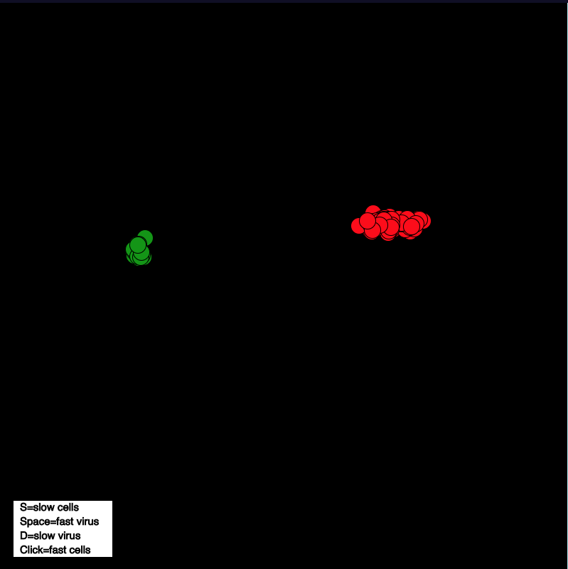

This page is dedicated to projects I have made throughout my second year of coding adventures. My first project is a collage made through the Gimp image editing software that shows a few pictures of my fall activities. Most of my time spent from July-October is spent either at marching band or football, so this collage is a hat tip to my hard work. More projects and their struggles to come.
Lightning
Dice
Chemotaxis

Starfield
Lightning - Lightning was tough with tracking the lightning to the mouse. There are x and y coordinates of the mouse, but the base lightning works in a straight line. I had to make the hand move along with the mouse so that the lightning would be able to travel with the saber. The saber and yoda are simply images that follow the x and y coordinates of the mouse. There were also some issues with the automated moving of the mouse. Sometimes the lightning disappears because there isn't enough theoretical room for the lightning towards the bottom. Certain parameter issues also arose with the movement, yoda going off the screen and stopping entirely.
Dice - Dice was difficult because there were many different objects to keep track of throughout the project. The shapes are a polygon method called depending on what the roll of each dice was. A shape is drawn with the same number of sides as the rolled value. The javascript part of dice was also complicated because there were many small changes that had to be made with variables and number truncation. "This." was especially annoying.
Chemotaxis - Chemotaxis was a struggle because of all the small issues that arose while managing each type of cell. The two types of cells are similar, but not exactly the same, so tracking the differences between the two was difficult and often times confusing. There were a few problems with getting the heal function to work properly so that the cells and the virus would split when "h" was pressed. They would not seperate fat enough and the die method would be invoked immediately. To remedy this the speed of each cell type was contrasted greater so that they would split instantly and be at different coordinates than each other. Another issue I ran into was with fill methods and adjustments to text and object appearance. The targeted item would change according to its assignment, but other items would also change because of the draw method constantly going through itself. I tried to solve this problem using push and popmatrix, but it failed to seperate certain drawings from others within the class.
Starfield - Issues arose with starfied in moving the circles and making the movement uniform. Someitmes the circles would go opposite directions to what was intended, and fixing that was simply adding Pi to the angle. There are a few things yup can do with starfield that isn't expressed within the sketch. Pressing 'c' will change the color of the circle while it is in animation. The 's' key will change the stroke color. 'r' takes out the oddball particle, 'p' pauses the animation, 'o' resumes it, and the space bar resets the background and stroke color.